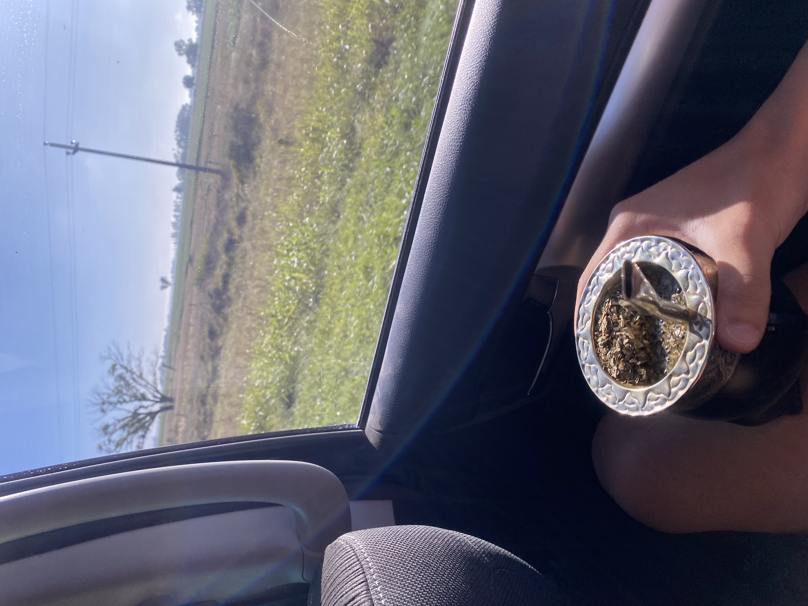

Volver a la pagina principal
Mate
Costumbre Argentina
Amargo no seas trolo man
Lo mejor que hicieron los gauchos hasta ahora
Santino Rossi es el mejor cebador de mates de Argentina
El tiene los siguientes utencillos
- Bombillon de alpaca.
- Mate imperial negro sincelado.
- Yerba canarias.
- Matera especial.
- Termo Stanley 1.2lts.
Pasos a seguir...
- Agua a 85°C.
- Agitar para extraer exceso de polvo.
- Colocar la yerba sobre una de las superficies del mate, logrando un efecto (montaña).
- Donde no esta la "Montaña" introducir agua tibia
- Acomodamos el mate y la montaña
- A disfrutar de unos buenos mates
-
- Si es en familia mejor
- Si es con amigos mejor
- Si sos argentino mejor
TIP:
- Si son un grupo de personas siempre se comienza a la izquierda...
¡Nunca te olvides que en cuanto mejor sean las vistas, mas ricos van a estar los mates!

Horarios especiales para el mate:
| Lunes |
Martes |
Miercoles |
Jueves |
Viernes |
Sabado |
Domingo |
| 24/7 PAPA |
24/7 PAPA |
24/7 PAPA |
24/7 PAPA |
24/7 PAPA |
24/7 PAPA |
24/7 PAPA |